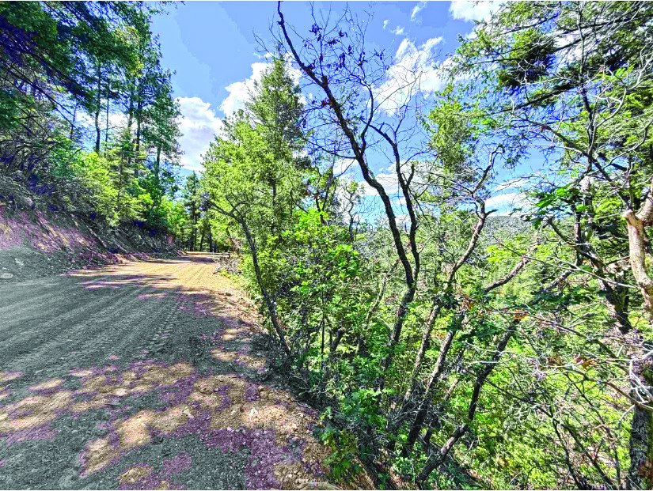

$12,000 Property in Tularosa Tularosa, New Mexico MLS #172681
Property
$12,000
| Price | $12,000 |
|---|---|
| Listed by | Aspen Trails Realty |
| Print edition | October 2026 Otero County Edition, page 3 |
About this property
Cloud Country estates Lots from $12,000 - $64.5K
Interested in this property?
Office phone: 575-682-7778
Aspen Trails Realty
Please contact the listing agent or company directly. The Real Estate Roundup is a publisher and does not show or sell properties.
Listing details and photo reproduced from the October 2026 print edition of The Real Estate Roundup (page 3), as printed. Prices and availability can change after publication — confirm with the listing agent.